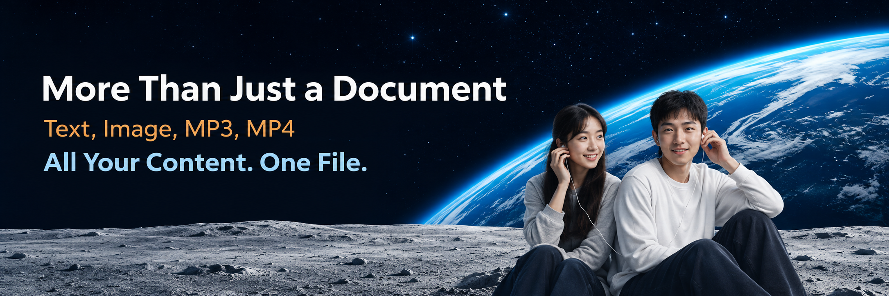

 ZinniaShark Note
ZinniaShark Note
Tus palabras y tus medios.
Reúnelos en un documento.
Escribe y organiza tablas, fotos, audio y vídeo en un mismo lugar. Guarda tus notas como un archivo .adq en tu PC.
Free: gratis · Pro: compra única USD $15.99 · Comparar ediciones de Windows →
La aplicación actual para Windows no restaura sesiones anteriores ni crea copias periódicas de recuperación. Guarda los cambios en un archivo antes de salir. Cómo guardar archivos
Windows 10 22H2 (compilación 19045) o posterior · Windows 11 / PC x64
Lanzamiento de Android en Google Play en preparación →

Lo que puedes hacer en un documento
Proteger documentos con contraseña
Establece una contraseña para los documentos que necesiten protección. El texto, las tablas y las fotos, grabaciones y vídeos incluidos se protegen juntos.
Añadir fotos, grabaciones y vídeos
Coloca escenas y grabaciones de entrevistas junto a tus explicaciones y revísalas dentro del documento.
Conservar tus propios archivos
Guarda textos y adjuntos juntos y traslada el archivo .adq adonde lo necesites.
Explorar el documento de ejemplo
Este documento contiene fotos, audio y vídeo. Míralo en el navegador o ábrelo en la aplicación para editarlo.
Probar la vista y los medios de ejemplo
NOTA CREATIVA / 01
Donde nacen las ideas
Una historia que empieza con una imagen.

Vista ilustrativa con medios de ejemplo
Cuando no bastan las palabras,
añade tus medios.
Imágenes de referencia, audios breves y escenas en movimiento.
Visualízalos y reprodúcelos dentro del documento
y añade tu propio contexto.

Escucha y anota lo que te inspire.
City Through Sound · Audio de ejemplo
Añade tus palabras también a las escenas en movimiento.
Disponibilidad por plataforma
Comparar e instalar ediciones de Windows →
Android · Novedades de las pruebas internas de Google Play →